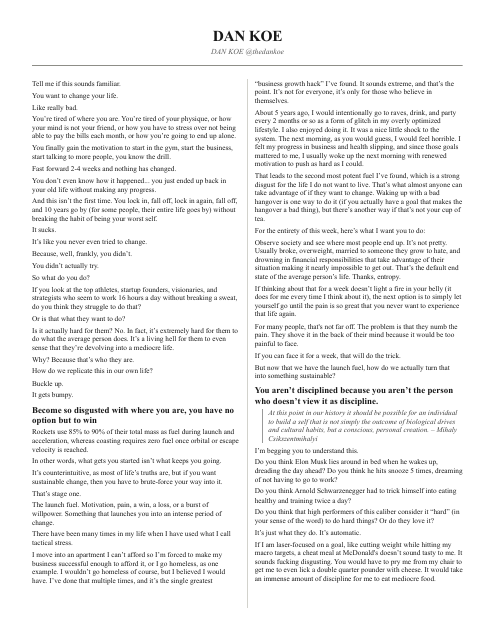

Chrome extension
Save articles.
Read anywhere.
Save long-form X Articles as clean, two-column PDFs for offline reading.
See it in action.
Keep headings, emphasis, links, lists, quotations, and code. Processing stays on your computer, with no uploads or tracking.

A sample article by Dan Koe
Two columns, 9 pt Times New Roman, Letter paper.
Open sample PDF ↗ (opens in a new tab)Install in Chrome.
Install manually while Chrome Web Store approval is pending.
- Extract the downloaded ZIP into a permanent folder. Keep it there after installation.
- Enter
chrome://extensionsin Chrome’s address bar, then enable Developer mode. - Click Load unpacked and select the extracted
x-to-pdffolder containingmanifest.json. - Find X to PDF in Chrome’s extensions menu. Pin it for easy access.
Manual updates: replace the installed folder’s contents with the new release, then click Reload at chrome://extensions.
Save an article.
1. Open an article
Open a long-form X Article you can access and let it finish loading. You can also paste its status URL into the extension and click Open.
2. Create your preview
Open X to PDF and click Create PDF. Review the extracted article in the print preview.
3. Save your PDF
Click Print / Save PDF, then select Save to PDF. Use Letter paper, 100% scale, and turn off browser headers and footers.